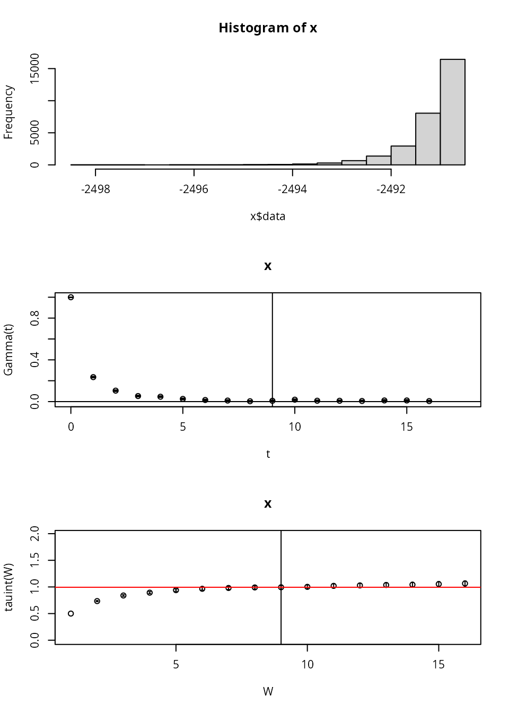
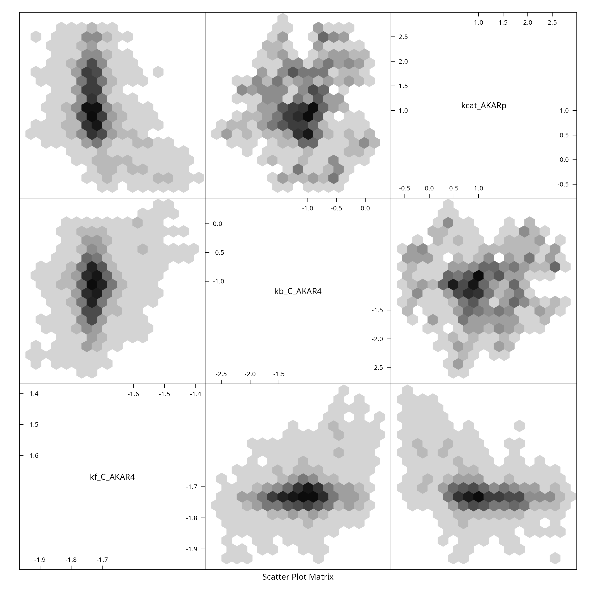

Sample AKAR4 with Parallel Tempering
sampleAKAR4mpi.RmdTo take a sufficiently large sample of AKAP79, we shall use MPI and parallel tempering. There are several ways to launch MPI processes (e.g. spawn processes).
We will use the simplest form: launch all MPI workers right from the
start, using mpirun -N 8 (or similar) and have all
processes communicate on MPI_COMM_WORLD, this requires very
minimal MPI code in R.
Create C Source Code
First we load the model in its SBtab form and create all derived files. We do this step only once and have the MPI part of the process load the coimpleted results of this:
f <- uqsa_example("AKAR4")
m <- model_from_tsv(f)
o <- as_ode(m)
#> Loading required namespace: pracma
C <- generate_code(o)
c_file <- "/dev/shm/AKAR4.c"
cat(C,sep="\n",file=c_file)
c_path(o) <- c_file
so_path(o) <- shlib(o)
ex <- experiments(m,o)
saveRDS( m,file="/dev/shm/AKAR4-m.RDS")
saveRDS( o,file="/dev/shm/AKAR4-o.RDS")
saveRDS(ex,file="/dev/shm/AKAR4-e.RDS")Sample via MPI
Here we run a prepared R script from the command line (any POSIX shell will do: bash/zsh/fish/dash). This way, the entire R program is wrapped in an mpirun call.
N=4 # by default
[ -e '/proc/cpuinfo' ] && N=$((`grep -c processor /proc/cpuinfo`)) && nm="`grep -m1 'model name' /proc/cpuinfo`"
echo "We will use $N cores with $nm"
sample_size=30000
start_time=$((`date +%s`))
date
mpirun -H localhost:$N -N $N ./pt-mh-akar4.R $sample_size > ./log.txt 2>&1
date
end_time=$((`date +%s`))
echo "Time spent sampling: $((end_time - start_time)) seconds (for $sample_size points)."
#> We will use 8 cores with model name : Intel(R) Core(TM) i7-4700MQ CPU @ 2.40GHz
#> Wed Apr 29 10:13:25 PM CEST 2026
#> Wed Apr 29 10:18:12 PM CEST 2026
#> Time spent sampling: 287 seconds (for 30000 points).On a high performance computing (hpc) cluster, the above would be in a slurm script or similar workload manager.
Inspect the Results
Here we check the integrated auto-correlation length (Markov chain time)
Sample <- readRDS(file="/dev/shm/AKAR4-parameter-sample-for-rank-0.RDS")
n <- NROW(Sample)
l <- attr(Sample,"logLikelihood")
if (requireNamespace("hadron")){
par(mfrow=c(3,1))
res <- hadron::uwerr(data=l,pl=TRUE)
tau <- ceiling(res$tauint+res$dtauint)
} else {
A <- acf(l)
tau <- sum(A$acf[A$acf>0.2])
plot(l,type="l",xlab="mcmc index",ylab="log-likelihood")
}
#> Loading required namespace: hadron
We reduce the sample for plotting purposes, by showing only every \(\tau_{\text{int.}}\)-th point and create a pairs plot for the first 6 parameters:
X <- Sample[seq(1,n,by=tau),]
colnames(X) <- rownames(m$Parameter)
if (require(hexbin)){
hexbin::hexplom(X,xbins=16)
} else {
pairs(X)
}
#> Loading required package: hexbin
The R script for Parallel Tempering
The R-Script executed via mpirun (MPI context) in the
section above is this:
#!/usr/bin/env Rscript
library(parallel)
library(uqsa)
library(pbdMPI)
comm <- 0
pbdMPI::init()
r <- pbdMPI::comm.rank(comm=comm)
cs <- pbdMPI::comm.size(comm=comm)
attr(comm,"rank") <- r
attr(comm,"size") <- cs
ca <- commandArgs(trailingOnly=TRUE)
if (length(ca)>0){
N <- as.integer(ca[1])
} else {
N <- 1000 # default sample size
}
h <- 1e-3 # step size
beta <- (1.0 - (r/cs))^2 # PT: inverse temperature
m <- readRDS(file="/dev/shm/AKAR4-m.RDS")
o <- readRDS(file="/dev/shm/AKAR4-o.RDS")
ex <- readRDS(file="/dev/shm/AKAR4-e.RDS")
parMCMC <- log10(values(m$Parameter))
stdv <- rep(2,length(parMCMC))
dprior <- dNormalPrior(mean=parMCMC,sd=stdv)
rprior <- rNormalPrior(mean=parMCMC,sd=stdv)
sim <- simfi(ex,o,log10ParMap,omit=2) # or simulator.c
metropolis <- metropolis_update(
simulate=sim,
dprior=dprior
)
ptMetropolis <- mcmc_mpi(
metropolis,
comm=comm
)
x <- mcmc_init(
beta,
parMCMC,
simulate=sim,
dprior=dprior
)
Z <- ptMetropolis(x,N,h) # the main amount of work is done here
saveRDS(Z,file=sprintf("/dev/shm/sample-rank-%i.RDS",r))
pbdMPI::barrier()
f <- dir("/dev/shm",pattern=sprintf('sample-rank-.*RDS$'),full.names=TRUE)
X <- gatherSample(f,beta)
saveRDS(X,file=sprintf("/dev/shm/AKAR4-parameter-sample-for-rank-%i.RDS",r))
time_ <- difftime(Sys.time(),start_time,units="min")
print(time_)
cat(
sprintf(
"rank %02i of %02i finished with an acceptance rate of %f %% and swap rate of %f.\n",
round(r),
round(cs),
attr(Z,"acceptanceRate"),
attr(Z,"swapRate")
)
)
finalize()